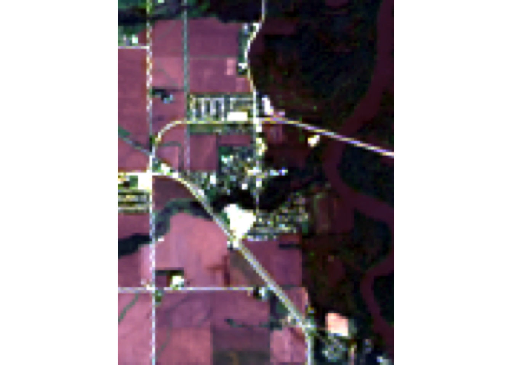
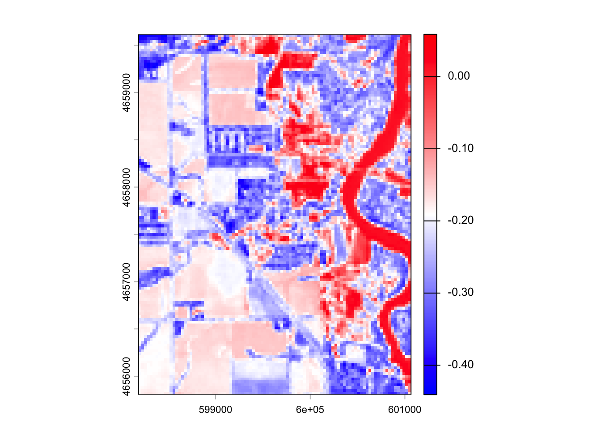
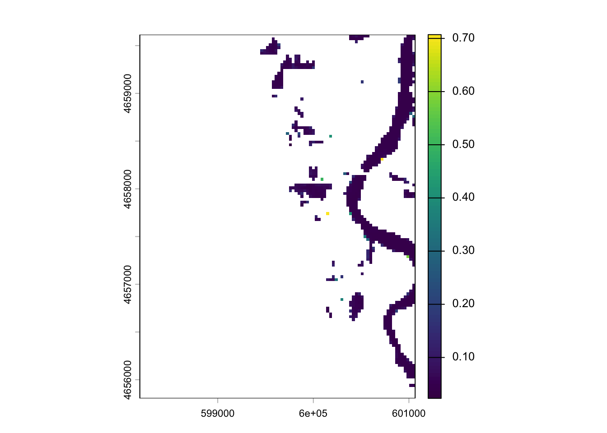
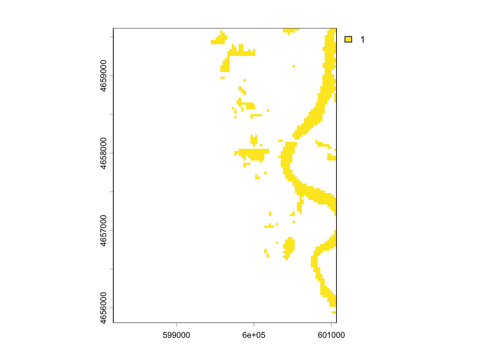
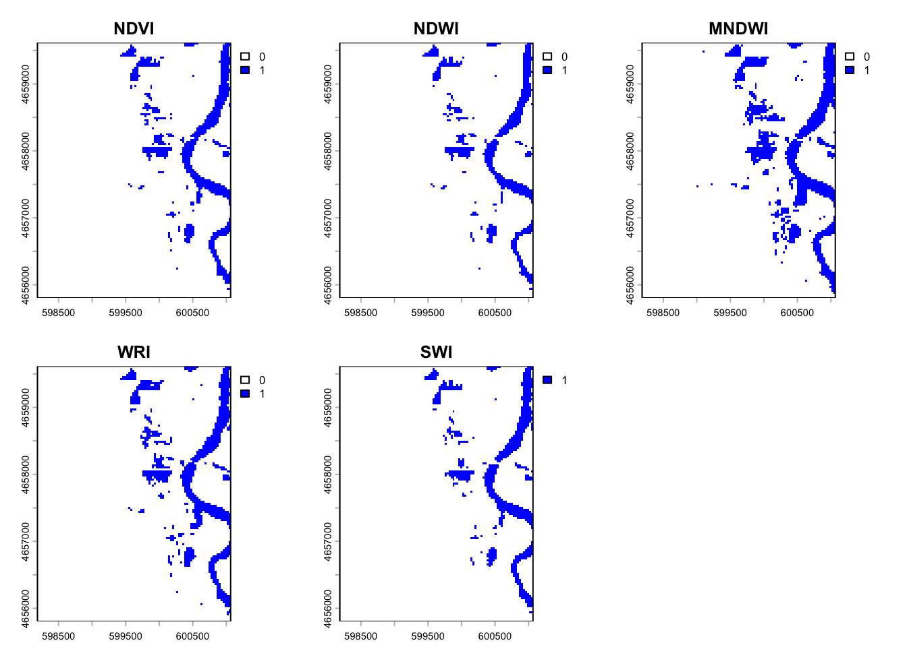
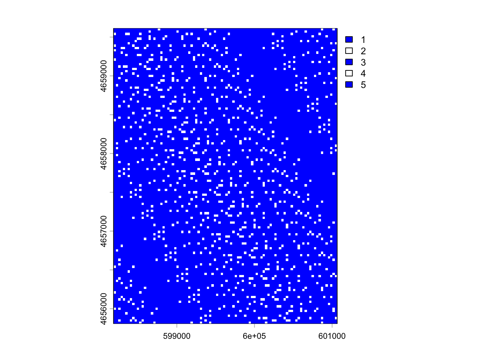
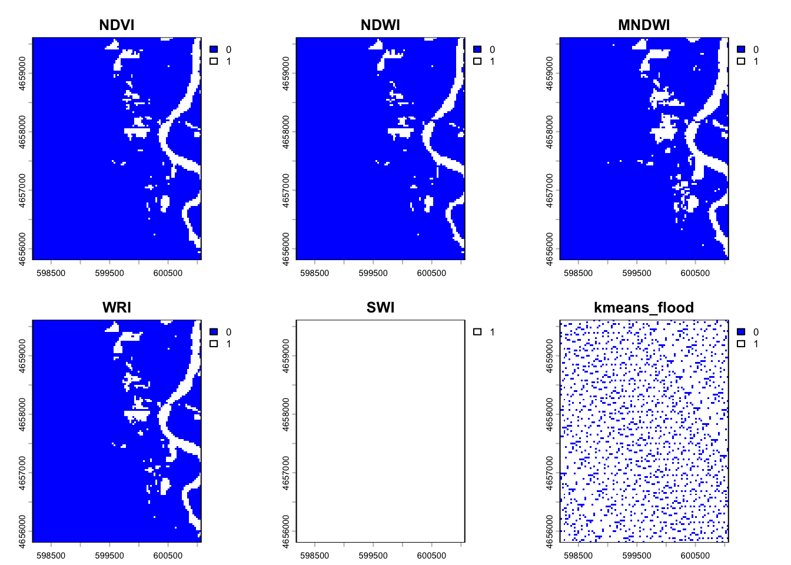
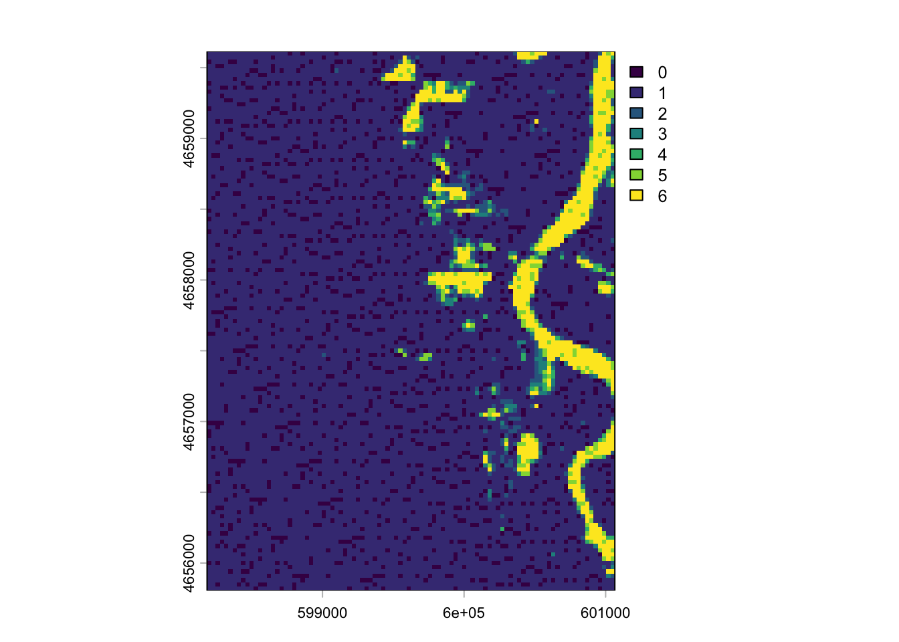

Lab 4: Rasters & Remote Sensing
Palo Iowa Flooding
Background
On September 26, 2016 at 11:47 a.m. U.S. Central Daylight Time (16:47 UTC) the Cedar and Wapsipinicon rivers in Iowa surged producing a flood wave that breached the river banks. The water level of the Cedar River measured ~20 feet — 8 feet above flood stage—near the city of Cedar Rapids.
The water level continued to rise until it peaked at ~22 feet on September 27. This event had only been exceeded once, in June 2008, when thousands of people were encouraged to evacuate from Cedar Rapids, the second-most-populous city in Iowa.

In this lab we are interested in the impacts in Palo Iowa because it is up stream of Cedar Rapids, contains a large amount of farm land, and does not have a forecast location to provide warning.
We will use the terra and rstac packages - along with our understanding of raster data and categorization - to create flood images using mutliband Landsat Imagery, thresholding, and classification methods.
Libraries
library(rstac) # STAC API
library(terra) # Raster Data handling
library(sf) # Vector data processing
library(mapview) # Rapid Interactive visualizationAlmost all remote sensing / image analysis begins with the same basic steps:
Identify an area of interest (AOI)
Identify the temporal range of interest
Identify the relevant images
Download the images
Analyze the products
Step 1: AOI identification
First we need to identify an AOI. We want to be able to extract the flood extents for Palo, Iowa and its surroundings. To do this we will use the geocoding capabilities within the AOI package.
Step 2: Temporal identification
The flood event occurred on September 26, 2016. A primary challenge with remote sensing is the fact that all satellite imagery is not available at all times. In this case Landsat 8 has an 8 day revisit time. To ensure we capture an image within the date of the flood, lets set our time range to the period between September 24th - 29th of 2016. We will define this duration in the form YYYY-MM-DD/YYYY-MM-DD.
Step 3: Identifying the relevant images
The next step is to identify the images that are available for our AOI and time range. This is where the rstac package comes in. The rstac package provides a simple interface to the SpatioTemporal Asset Catalog (STAC) API, which is a standard for discovering and accessing geospatial data.
STAC is a specification for describing geospatial data in a consistent way, making it easier to discover and access datasets. It provides a standardized way to describe the metadata of geospatial assets, including their spatial and temporal extents, data formats, and other relevant information.
Catalog: A catalog is a collection of STAC items and collections. It serves as a top-level container for organizing and managing geospatial data. A catalog can contain multiple collections, each representing a specific dataset or group of related datasets.
Items: The basic unit of data in STAC. Each item represents a single asset, such as a satellite image or a vector dataset. Items contain metadata that describes the asset, including its spatial and temporal extents, data format, and other relevant information.
Asset: An asset is a specific file or data product associated with an item. For example, a single satellite image may have multiple assets, such as different bands or processing levels. Assets are typically stored in a cloud storage system and can be accessed via URLs.
For this project we are going to use a STAC catalog to identify the data available for our analysis. We want data from the Landsat 8 collection which is served by the USGS (via AWS), Google, and Microsoft Planetary Computer (MPC). MPC is the one that provides free access so we will use that data store.
If you go to this link you see the JSON representation of the full data holdings. If you CMD/CTL+F on that page for Landsat you’ll find the references for the available data stores.
Within R, we can open a connection to this endpoint with the stac function:
# Open a connection to the MPC STAC API
(stac_query <- stac("https://planetarycomputer.microsoft.com/api/stac/v1"))###rstac_query
- url: https://planetarycomputer.microsoft.com/api/stac/v1/
- params:
- field(s): version, base_url, endpoint, params, verb, encodeThat connection will provide an open entry to ALL data hosted by MPC. The stac_search function allows us to reduce the catalog to assets that match certain criteria (just like dplyr::filter reduces a data.frame). The get_request() function sends your search to the STAC API returning the metadata about the objects that match a criteria. The service implementation at MPC sets a return limit of 250 items (but it could be overridden with the limit parameter).
Here, we are interested in the “Landsat Collection 2 Level-2” data. From the JSON file (seen in the browser). To start, lets search for that collection using the stac -> stac_search –> get_request workflow refining your search to our AOI and time range of interest.
The last thing we need to do, is sign this request. In rstac, items_sign(sign_planetary_computer()) signs STAC item asset URLs retrieved from Microsoft’s Planetary Computer, ensuring they include authentication tokens for access. sign_planetary_computer() generates the necessary signing function, and items_sign() applies it to STAC items. This is essential for accessing datasets hosted on the Planetary Computer, and other catalog were data access might be requester-paid or limited.
With that, we are ready to download the data using assets_download(). In total, a Landsat 8 item has the following 11 bands:

For this lab, lets just get the first 6 bands. Assets are extracted from a STAC item by the asset name (look at the print statements of the stac_query). Let’s define a vector of the assets we want:
# Bands 1-6
bands <- c('coastal', 'blue', 'green', 'red', 'nir08', 'swir16')Now we can use the assets_download() function to download the data. The output_dir argument specifies where to save the files, and the overwrite argument specifies whether to overwrite existing files with the same name.
And that does it! You now have the process needed to get you data.
With a set of local files, you can create a raster object! Remember your files need to be in the order of the bands (double check step 2). - list.files() can search a directory for a pattern and return a list of files. The recursive argument will search all sub-directories. The full.names argument will return the full path to the files.
The
rast()function will read the files into a raster object.The
setNames()function will set the names of the bands to the names we defined above.
#AOI
palo <- AOI::geocode("Palo, Iowa", bbox = TRUE)
# Flood occurred Sept 26, 2016; search Sept 24–29 for cloud-free imagery
temporal_range <- "2016-09-24/2016-09-29"
mapview::mapview(palo)# Connect to Microsoft Planetary Computer
stac_query <- stac("https://planetarycomputer.microsoft.com/api/stac/v1") |>
stac_search(
collections = "landsat-c2-l2",
datetime = temporal_range,
bbox = st_bbox(palo),
limit = 1) |>
get_request() |>
items_sign(sign_planetary_computer())
cat("Item ID:", stac_query$features[[1]]$id, "\n")Item ID: LC08_L2SP_025031_20160926_02_T1 cat("Date:", stac_query$features[[1]]$properties$datetime, "\n")Date: 2016-09-26T16:47:41.390781Z cat("Cloud cover:", stac_query$features[[1]]$properties$`eo:cloud_cover`, "%\n")Cloud cover: 0.01 %assets_download(items = stac_query,
asset_names = c('coastal', 'blue', 'green', 'red', 'nir08', 'swir16'),
output_dir = 'data',
overwrite = TRUE)###Items
- features (1 item(s)):
- LC08_L2SP_025031_20160926_02_T1
- assets: blue, coastal, green, nir08, red, swir16
- item's fields:
assets, bbox, collection, geometry, id, links, properties, stac_extensions, stac_version, typeraster_files <- list.files(path = "data",
pattern = "*.TIF$",
full.names = TRUE,
recursive = TRUE)
raster_files <- sort(raster_files)[1:6]
landsat_stack <- rast(raster_files)
band_names <- c('coastal', 'blue', 'green', 'red', 'nir08', 'swir16')
landsat_stack <- setNames(landsat_stack, band_names)
landsat_stackclass : SpatRaster
size : 7801, 7681, 6 (nrow, ncol, nlyr)
resolution : 30, 30 (x, y)
extent : 518085, 748515, 4506885, 4740915 (xmin, xmax, ymin, ymax)
coord. ref. : WGS 84 / UTM zone 15N (EPSG:32615)
sources : LC08_L2SP_025031_20160926_20200906_02_T1_SR_B1.TIF
LC08_L2SP_025031_20160926_20200906_02_T1_SR_B2.TIF
LC08_L2SP_025031_20160926_20200906_02_T1_SR_B3.TIF
... and 3 more sources
names : coastal, blue, green, red, nir08, swir16 Question 1: Data Access
Download all the data needed for this lab. What are the dimensions of your stacked image? What is the CRS? What is the cell resolution?
Size: 7801, 7681, 6; resolution: 30m x 30m; CRS: WSG 84
Analyize the images
We only want to analyze our image for the regions surrounding Palo (our AOI). Transform your AOI to the CRS of the landsat stack and use it to crop your raster stack.
palo_utm <- palo |>
st_transform(crs(landsat_stack))
landsat_crop <- crop(landsat_stack, palo_utm)Question 2: Data Visualization
Standard cameras replicate whats seen with the human eye, by capturing light in the red, green and blue wavelengths and applying red, green ,and blue filters (channels) to generate a natural looking RGB image.
With a multispectral Landsat 8 image, we have more information to work with and different wavelengths/combinations can help isolate particular features.
For example, the Near Infrared (NIR) wavelength is commonly used to analysis vegetation health because vegetation reflects strongly in this portion of the electromagnetic spectrum. Alternatively, the Shortwave Infrared (SWIR) bands are useful for discerning what is wet and dry.
When working with Landsat imagery, a logical first step is to load an image into an image analysis program (like ENVI) to visualize whats in the scene. We can do the same thing with R using the plotRGB function and selecting which band should populate each channel.
stretching is a common technique used to enhance the contrast of an image by adjusting the brightness and contrast of the pixel values. This is done by mapping the pixel values to a new range, which can help to highlight certain features in the image. In R, the stretch argument in the plotRGB function allows you to apply different stretching methods to enhance the visual appearance of the image. Test the different stretch options (“lin” and “hist”) and see how they affect the image.
For question 2, make four unique combinations:
- R-G-B (natural color)
- NIR-R-G (fa) (color infared)
- NIR-SWIR1-R (false color water focus)
- Your choice
What does each image allow you to see?
plotRGB(landsat_crop, r = 4, g = 3, b = 2, stretch = "lin",
main = "Natural Color: Red-Green-Blue")
#this natural color map shows water, veg, urban areas, and clouds
plotRGB(landsat_crop, r = 5, g = 4, b = 3, stretch = "lin",
main = "Color Infrared: NIR-Red-Green\n(Bright red = healthy vegetation)")
#this color infared map shows healthy veg, water, and soil
plotRGB(landsat_crop, r = 5, g = 6, b = 4, stretch = "lin",
main = "Water Focus: NIR-SWIR1-Red\n(Dark blue = open water/flooding)")
#this false color map shows water and veg
NDWI <- (landsat_crop$green - landsat_crop$nir08) /
(landsat_crop$green + landsat_crop$nir08)
plot(NDWI, col = colorRampPalette(c("blue", "white", "red"))(256))
#this NDWI map shows areas with waterQuestion 3: Indeces and Thresholds
Accurate assessment of surface water features (like flooding) have been made possible by remote sensing technology. Index methods are commonly used for surface water estimation using a threshold value.
For this lab we will look at 5 unique thresholding methods for delineating surface water features from different combinations of Landsat bands listed below:
| Name | Abbreviation | Formula | Water Threshold |
|---|---|---|---|
| Normalized difference vegetation index | NDVI | \[ \frac{NIR - Red}{NIR + Red} \] | Cells less then 0 |
| Normalized Difference Water Index | NDWI | \[ \frac{Green - NIR}{Green + NIR} \] | Cells greater then 0 |
| modified | |||
| normalized difference water index | MNDWI | \[ \frac{Green - SWIR1}{Green + SWIR1} \] | Cells greater then 0 |
| water ratio index | WRI | \[ \frac{Green + Red}{NIR + SWIR1} \] | Cells greater then 1 |
| simple water index | SWI | \[ \frac{1}{\sqrt{Blue - SWIR1}} \] | Cells less then 5 |
Raster Algebra
#NDVI
NDVI <- (landsat_crop$nir08 - landsat_crop$red) /
(landsat_crop$nir08 + landsat_crop$red)
#NDWI
NDWI <- (landsat_crop$green - landsat_crop$nir08) /
(landsat_crop$green + landsat_crop$nir08)
#MNDWI
MNDWI <- (landsat_crop$green - landsat_crop$swir16) /
(landsat_crop$green + landsat_crop$swir16)
#WRI
WRI <- (landsat_crop$green + landsat_crop$red) /
(landsat_crop$nir08 + landsat_crop$swir16)
#SWI
SWI <- 1 / sqrt(landsat_crop$blue - landsat_crop$swir16)
plot(SWI)
stacked <- c(NDVI, NDWI, MNDWI, WRI, SWI)
names(stacked) <- (c("NDVI", "NDWI", "MNDWI", "WRI", "SWI"))
plot(stacked,
col = colorRampPalette(c("blue", "white", "red"))(256))
Describe the 5 images. How are they simular and where do they deviate?
The majority of the images outline the stream well, other than the SWI map which includes the feature with the surrounding area because of the simplification. The NDVI, NDWI, MNDWI, and WRI maps are also able to parse apart the area to the west of the stream whereas the SWI map groups it with the stream.
Raster Thresholding
Here we will extract the flood extents from each of the above rasters using the thresholds defined in the above table.
For all 5 index rasters do the following apply the appropriate threshold and then do the following:
- Stack the binary ([0,1]) files into a new stack (
c()), - Set the names to meaningful descriptions (
setNames) - Perform one more classifier (
app) making sure that all NA values are set to zero. - Plot the stack so that floods are blue, and background is white.
ndvi_flood <- app(NDVI, function(x) ifelse(x < 0, 1, 0))
ndwi_flood <- app(NDWI, function(x) ifelse(x > 0, 1, 0))
mndwi_flood <- app(MNDWI, function(x) ifelse(x > 0, 1, 0))
wri_flood <- app(WRI, function(x) ifelse(x > 1, 1, 0))
swi_flood <- app(SWI, function(x) ifelse(x < 5, 1, 0))
plot(swi_flood)
stacked_flood <- c(ndvi_flood, ndwi_flood, mndwi_flood, wri_flood, swi_flood)
names(stacked_flood) <- (c("NDVI", "NDWI", "MNDWI", "WRI", "SWI"))
plot(stacked_flood,
col = c("white", "blue"))
Describe the differences and similarities between the different maps
The NDWI and SWI maps have a more refined views of of the flooded areas whereas the WRI, NDVI, and MNDWI maps are more generalized. This can be seen in the break in the stream, where other maps have this area more filled in.
Question 4:
An alternative way to identify similar features in a continuous field is through supervised or unsupervised classification. Supervised classification groups values (cells) based on user supplied “truth” locations. Since flood events are fast-occurring there is rarely truth points for a live event. Instead developers rely on libraries of flood spectral signatures.
Unsupervised classification finds statistically significant groupings within the data. In these clustering algorithms, the user specifies the number of classes and the categorization is created based on the patterns in the data.
For this lab we will use a simple k-means algorithm to group raster cells with similar spectral properties.
Anytime we want to be able to produce a consistent/reproducible result from a random process in R we need to set a seed. Do so using set.seed
set.seed(31)- Extract the values from your 6-band raster stack with
values - Check the dimensions of the extracted values with
dim
What do the dimensions of the extracted values tell you about how the data was extracted?
stack_extracted <- values(stacked_flood)
dim(stack_extracted)[1] 12192 5#the dimensions are 12192 rows x 5 columns where the columns are the bands and the rows are the raster pixels.- Remove NA values from your extracted data with
na.omitfor safety
stack_extracted_clean <- na.omit(stack_extracted)
dim(stack_extracted_clean)[1] 869 5Use the kmeans clustering algorithm from the
statspackage to cluster the extracted raster data to a specified number of clustersk(centers). Start with 12.Once the
kmeansalgorithm runs, the output will be a list of components. One of these isclusterwhich provides a vector of integers from (1:k) indicating the cluster to which each row was allocated.
k <- 5
kmeans_stack <- kmeans(stack_extracted_clean, centers = k)- Create a new raster object by copying one of the original bands. For example:
kmeans_raster <- stacked_flood[[2]]- Set the values of the copied raster to the cluster vector from the output kmeans object. For example:
values(kmeans_raster) <- kmeans_stack$clusterWarning: [setValues] values were recycledplot(kmeans_raster,
col = c("blue", "white"))
Try a few different clusters (k) to see how the map changes.
Great! You now have a categorical raster with categories 1:k. The issue is we don’t know the value that corresponds to the flood water. To identify the flood category programatically, generate a table crossing the values of one of your binary flood rasters, with the values of your kmeans_raster. To do this, you will use the table function and pass it the values from a binary flood raster, and the values from your kmeans_raster. Here the following occurs:
tablebuilds a contingency table counting the number of times each combination of factor levels in the input vector(s) occurs. This will give us a table quantifying how many cells with a value 1 are aligned with each of the k classes, and how many cells with a value 0 are aligned with each of the k classes. If you pass the binary flood values as the first argument totablethen the unique values (0,1) will be the rows. They will always be sorted meaning you know the flooded cells will be in the second row.which.max()returns the index of the maximum value in a vector.combine this information to identify the cluster in the kmeans data that coincides with the most flooded cells in the binary mask.
Once you know this value, use
appto extract the flood mask in a similar way to the thresholding you did above.Finally add this to add to your flood raster stack with
c()and make a new plot!
flood_table <- table(values(stacked_flood[[2]]), values(kmeans_raster))
flood_cluster <- which.max(flood_table[1,])
kmeans_flood <- app(kmeans_raster, fun = function(x) { x == flood_cluster })
flood_stack <- c(stacked_flood, kmeans_flood)
names(flood_stack)[nlyr(flood_stack)] <- "kmeans_flood"
plot(flood_stack,
col = c("blue", "white"))
Question 5
Awesome! You have now created a flood raster using 6 different methods. Our last goal is to identify how they compare.
- First we will calculate the total area of the flooded cells in each image. You can use
globalto determine the sum of each layer. Since flooded cells have a value of 1, the sum of an entire band is equivalent to the number of flooded cells. You can then use the resolution of the cell to convert counts to a flooded area.
Print these values
area_flood <- global(flood_stack, fun = "sum", na.rm = TRUE)
area_flood sum
NDVI 926
NDWI 806
MNDWI 1335
WRI 1062
SWI 869
kmeans_flood 10566cell_area <- res(flood_stack)[1] * res(flood_stack)[1]
cell_area[1] 900area_flood_calc <- area_flood * cell_area
area_flood_calc sum
NDVI 833400
NDWI 725400
MNDWI 1201500
WRI 955800
SWI 782100
kmeans_flood 9509400- Second we can visualize the uncertainty in our classifications by summing the entire stack using
app. The higher the count in each pixel, the more certain we can be about its flooded state. For example, if a cell has a value of 6, it indicates that every method identified the cell as flooded, if it has a value of 2 then we know that two of the methods identified the cell as flooded.
Plot your flood map using the blues9 color palette
flood_certainty <- app(flood_stack, fun = "sum", na.rm = TRUE)
plot(flood_certainty, colo = blues9)Warning in plot.window(...): "colo" is not a graphical parameterWarning in plot.xy(xy, type, ...): "colo" is not a graphical parameterWarning in title(...): "colo" is not a graphical parameter
- Third once you have a summed raster layer, copy it as a new layer, and set all 0 values to NA. Then map the raster with
mapview. Zoom and pan around the interactive map noting that a pixel level is displayed in the upper right hand corner.
Why are some of the cell values not an even number?
flood_certainty_clean <- flood_certainty
flood_certainty_clean[flood_certainty_clean == 0] <- NA
mapview(flood_certainty_clean, col.regions = blues9)#The map inverts the flood certainty values so the areas that are likely considered to be flood areas are shown as low certainty and the areas that are likely land are considered to be high flood areas. It is possible that some cells are not assign to numbers because they did not fall within the sclae for the flood certainty.Congratulations! You have successfully carried out a complete flood analysis from data acquisition through evaluation. This kind of work goes on regularly and is part of a couple national efforts (NOAA, USGS, FirstStreet, FEMA) to generate flood inundation libraries that contribute to better extraction and classification of realtime flood events, resource allocation during events, and damage assessments post events.
Here we used Landsat imagery but the same process could be implemented on drone footage, MODIS data, or other private satellite imagery.
Your evaluation was based purely on the raster data structure and your ability to conceptualize rasters as vectors of data with dimensional structure. You applied simple mathematical operators (+, /, -) to the raster bands, and a kmeans clustering algorithm to the data matrix of the multiband raster - all within ~100 lines of code!